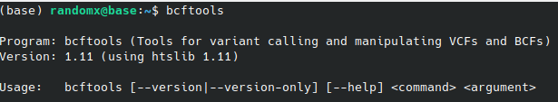

The RandomX Side

Appunti, howto e robba forse utile
Cos'è un VCF?
Inutile entrare in dettaglio al 90% se siete qui già sapete cos'è. Un vcf è un file di testo che se è più grosso di 200mb e lo aprite per vedere cosa c'è scritto siete fottuti. Di conseguenza o vi toccherà aspettare che il pc finisca di impallarsi oppure dovrete ricorrere a qualche magia nera.
In breve:
Il Variant Call Format (VCF) è un formato di file testuale di tipo tab-separated usato in bioinformatica per raccogliere le varianti genomiche ed attualmente è alla versione 4.3. Il formato permette di descrivere in formato tabulare le varianti genomiche più comuni di un genoma, insieme alla possibilità di inserire annotazioni e metadati.
Copiato e incollato da Wikipedia, se volete approfondire ecco il link.
Iniziamo. Estrazione di una regione da un vcf
Voglio estrarre per il cromosoma 10 tutti gli individui e gli SNPs che si trovano nella regione 83,388,407-83,408,407.Come Faccio?
I dataset con i vcf dei 1000 genomi sono disponibili su questo ftp
Ma come posso fare a estrarre questa regione?
Il programma che useremo è BCFtools. Grazie a questo software non dovremo scaricare i migliaia di mega del vcf ma da linea di comando digiteremo il segente comando:
bcftools view -r 10:83388407-83408407 ftp://ftp.1000genomes.ebi.ac.uk/vol1/ftp/release/20130502/ALL.chr10.phase3_shapeit2_mvncall_integrated_v5a.20130502.genotypes.vcf.gz > ALL.chr10.phase3_shapeit2_mvncall_integrated_v5a.20130502.genotypes.vcf.gz
Ora abbiamo il nostro vcf con la regione che ci interessa.
E se volessimo solo alcuni individui?
In questo caso dovrei salvarmi i codici su una lista e poi rieseguire il comando ma con una piccola modifica, con il parametro -s inserito. Infatti s sta per sample. Dopo questo parametro scriviamo i codici degli individui che vogliamo separati da una virgola (qui ho scelto a caso questi cinque:HG01362,HG01606,HG02895,NA19909,NA21126):
bcftools view -r 10:83388407-83408407 -s HG01362,HG01606,HG02895,NA19909,NA21126 ftp://ftp.1000genomes.ebi.ac.uk/vol1/ftp/release/20130502/ALL.chr10.phase3_shapeit2_mvncall_integrated_v5a.20130502.genotypes.vcf.gz > ALL.chr10.phase3_shapeit2_mvncall_integrated_v5a.20130502.genotypes.vcf.gz
Si tutto molto bello ma nel caso non sapessi manco come si installa questo bcftools?
E hai ragione. Qui di seguito viene riportata la procedura per installare questo sofware su una macchina Linux. E' la stessa che puoi trovare a questo link.Hai bisogno di scaricare 3 pacchetti: SAMtools, BCFtools e infine HTSlib. Per sapere cosa fanno e a che servono visita il link che ti ho messo sopra. Per prima cosa, se non avete mai compilato un pacchetto Linux da sorgente dovrete installare tutte le dipendenze e programmi che vi permettono di compilare il pacchetto sulla vostra macchina. Digitiamo quindi:
sudo apt-get install build-essentials
Ora possiamo continuare la nostra installazione. Decomprimete tutte e tre le cartelle e iniziamo recandoci nella cartella di samtools dalla shell
cd Scaricati/cd samtools-1.11
./configure
make
sudo make install
Facciamo la stessa cosa per le altre cartelle che abbiamo scaricato ovvero BFCtools e HTSlib
Ha funzionato?
Per saperlo basta aprire la nostra shell linux e digitare bcftools. Come vediamo nell'immagine:
Nel caso la shell non rilevasse il comando. Proviamo per prima cosa a chiudere e riaprila. Se neanche così non viene riconosciuto il comando vuol dire che dobbiamo inserirlo dentro il nostro file bashrc. Questo file contiene tutte le istruzioni degli eseguibili installati e dove cercarli nel nostro sistema.
export PATH=/dove/è/installato/bin:$PATH
Nel caso non sapessimo dove si trovi il nostro path basta fare il seguente comando sulla shell:
whereis bcftools
E andiamo a sostituire l'output nel comando precedente in questo caso:
export PATH=/usr/local/bin:$PATH